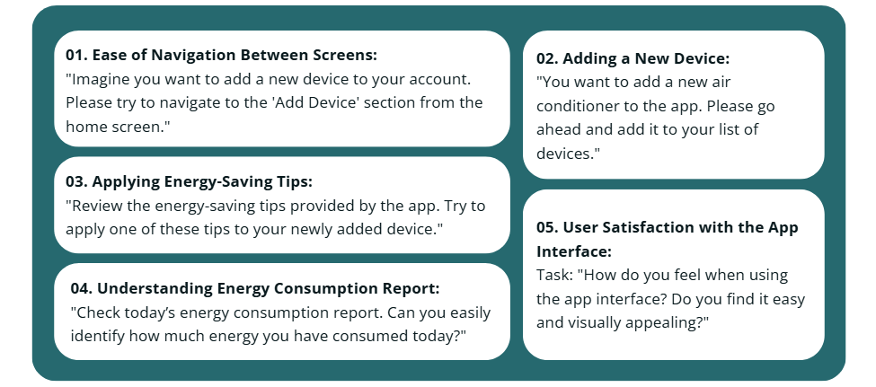

Watt
The "WATT" app is a simple and smart solution to help people in Saudi Arabia save electricity at home.
It allows users to track how much energy their devices, like air conditioners and washing machines, are using.
The app gives real-time updates, tips to save energy, and clear reports about daily or weekly consumption.
The goal is to make it easy for users to understand and manage their energy use,
helping them lower their electricity bills and reduce their environmental impact.
With a simple design and easy navigation, the app is suitable for everyone,
even those with little technical knowledge.
Project objectives
USER RESEARCH
Interview Questions:
What smart devices or appliances do you use frequently in your home?
What challenges do you face when trying to reduce your energy consumption?
Do you find it difficult to monitor the energy usage of specific devices, such as air conditioners or washing machines?
If you could use a tool to track your energy consumption in real time, what type of information would be most useful to you?
Does receiving personalized advice on how to reduce the energy consumption of specific devices encourage you to make
changes to your energy usage habits?
Data analysis
Sketching
Prototyping and Iteration
1. low-fidelity prototype

2. mid-fidelity prototype

3. high-fidelity prototype

User Testing and Feedback
We used usability testing to evaluate the user experience of the Watt app. Via Figma The goal of the test was to evaluate how easy it was to use the app, understand consumption reports, and apply tips to reduce energy usage, which helps us improve the user experience.
Tasks for Usability Testing:
Results:
We used usability testing to evaluate the user experience of the Watt app. Via Figma The goal of the test was to evaluate how easy it was to use the app, understand consumption reports, and apply tips to reduce energy usage, which helps us improve the user experience.